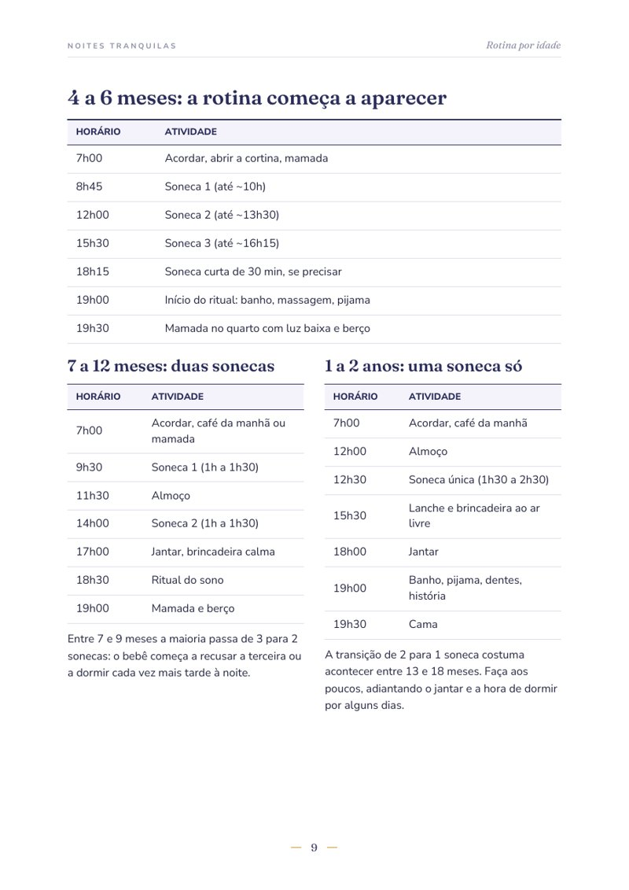
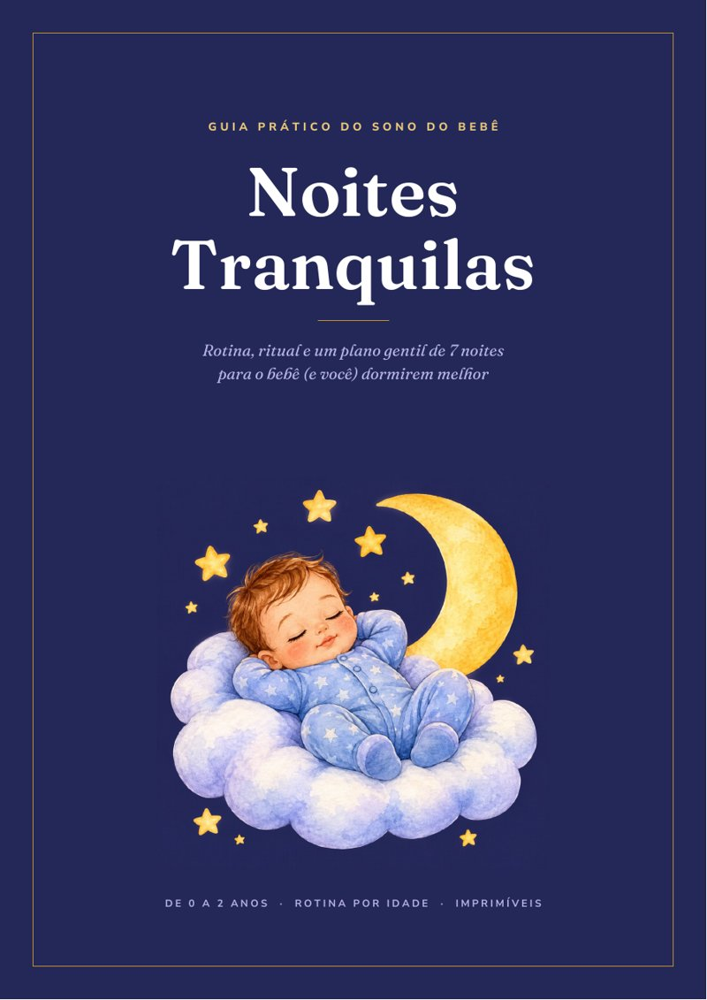
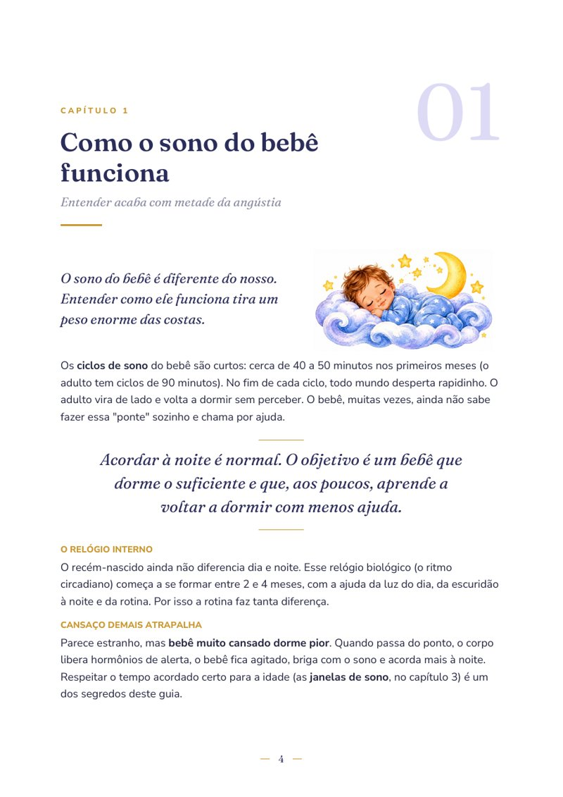
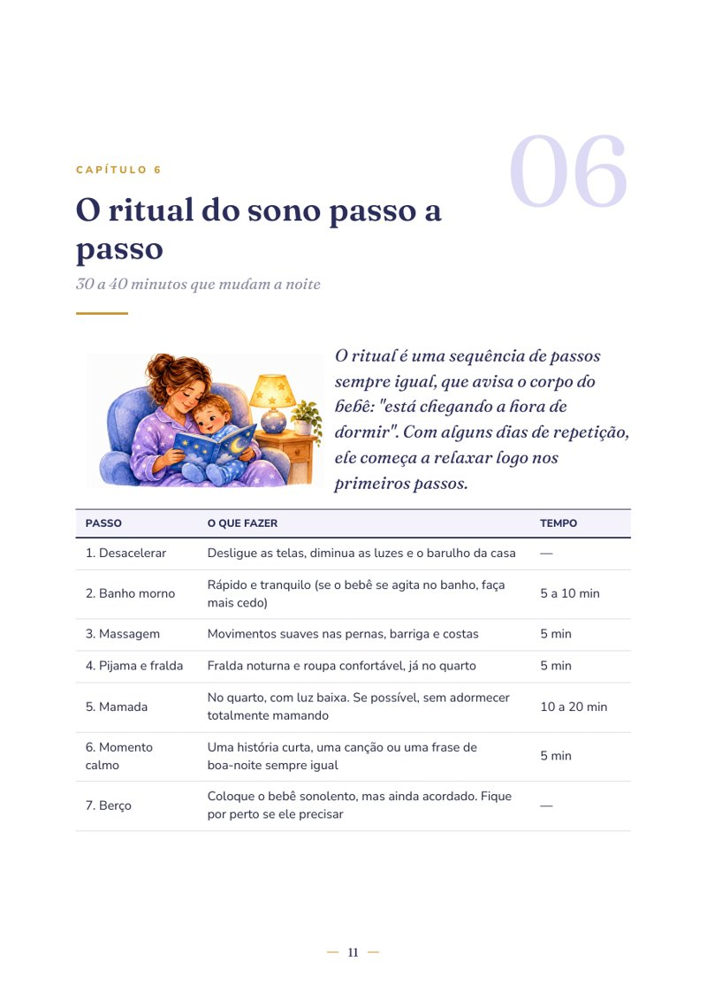
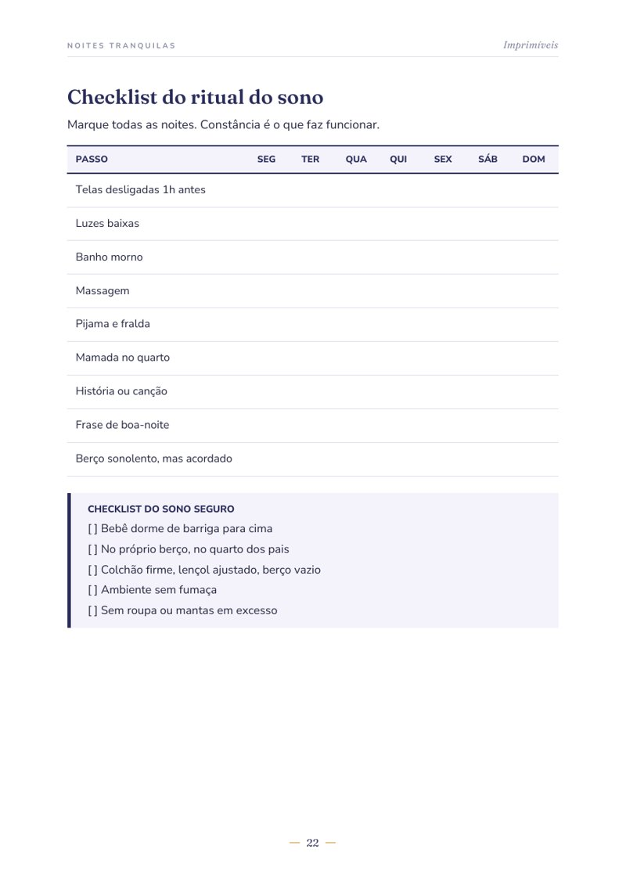
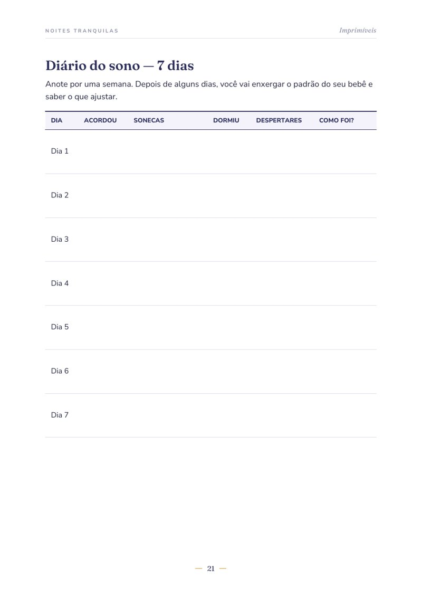

Rotina por idade, ritual do sono e um plano gentil de 7 noites, sem deixar o bebê chorando sozinho.


O sono do bebê funciona diferente do nosso: os ciclos são curtos, o relógio biológico ainda está se formando e o cansaço demais faz ele dormir pior, não melhor. Quando você entende isso, tudo muda.
O segredo não é um truque mágico. É saber o que o bebê precisa em cada idade e repetir todos os dias.
O Noites Tranquilas junta tudo isso num guia curto, bonito e direto ao ponto, pra você ler em uma noite e começar a aplicar no dia seguinte.
11 capítulos práticos, com tabelas, rotinas prontas e passo a passo.
Diagramado como um livro, com ilustrações delicadas e letras grandes pra ler no celular.



Nada de deixar o bebê chorando sozinho no quarto. No método da cadeira, você começa sentada ao lado do berço e, noite após noite, vai se afastando aos pouquinhos, enquanto o bebê aprende a adormecer com menos ajuda.
O guia mostra exatamente onde ficar e o que fazer em cada noite, e o que fazer nos despertares.
Pra todo mundo da casa (e a avó, e a babá) seguir a mesma rotina.
A sequência do sono pra seguir toda noite.

Diário do sono de 7 diasAnote e descubra o padrão do seu bebê.
Marque cada noite e mantenha a constância.
🔒 Compra segura · você recebe o PDF assim que o pagamento é confirmado
Leia o guia, aplique as rotinas e o ritual. Se em até 7 dias você achar que não valeu a pena, é só pedir o reembolso pela plataforma de pagamento e devolvemos 100% do valor. Sem perguntas.
Logo após a confirmação do pagamento, você recebe no e-mail o acesso ao PDF. Pode ler no celular, no computador ou imprimir.
De 0 a 2 anos. Tem rotina e orientação específica pra cada fase. O plano de 7 noites é pra bebês a partir de 6 meses.
Não. O guia usa métodos gentis, com você presente. Em nenhum momento ele indica deixar o bebê chorando sozinho.
Cada bebê tem seu tempo, mas muitas famílias notam melhora em 1 a 2 semanas de rotina constante.
Não. É um material educativo, baseado em orientações gerais de sono seguro e sono infantil. Sempre siga as recomendações do pediatra do seu bebê.
Você tem 7 dias de garantia. É só pedir o reembolso pela plataforma e devolvemos o valor integral.
Hoje à noite já pode ser diferente.